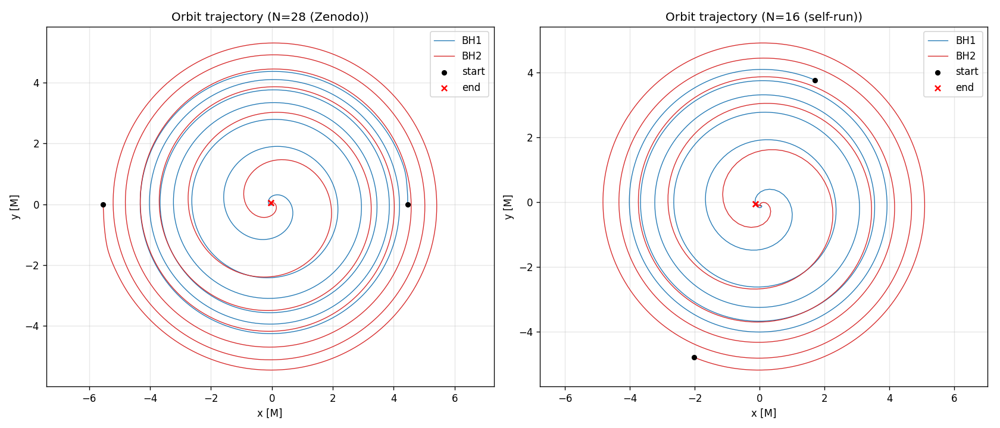
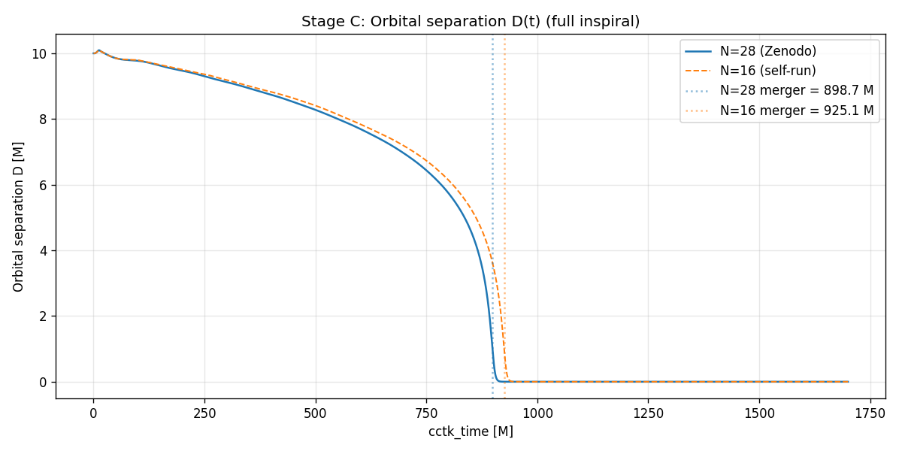
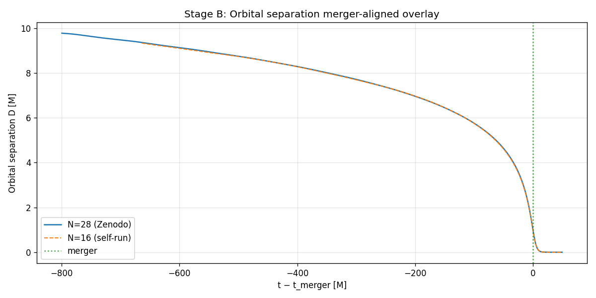
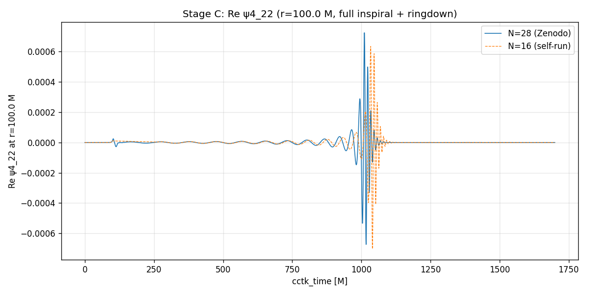
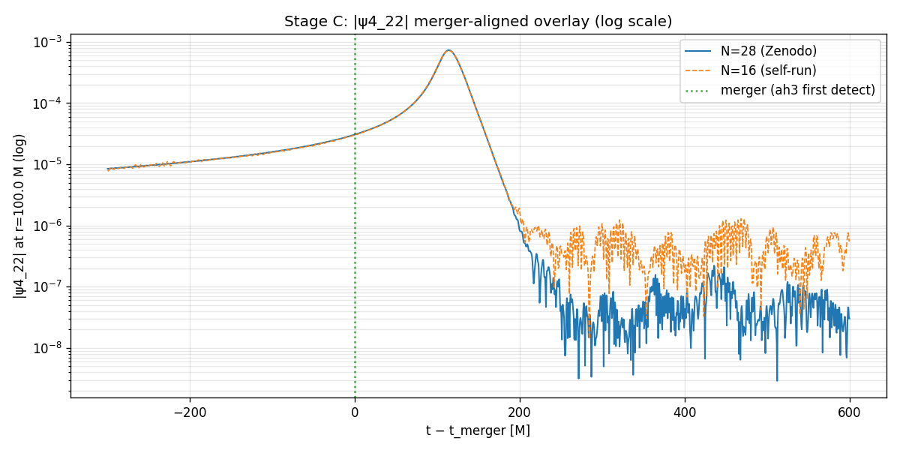
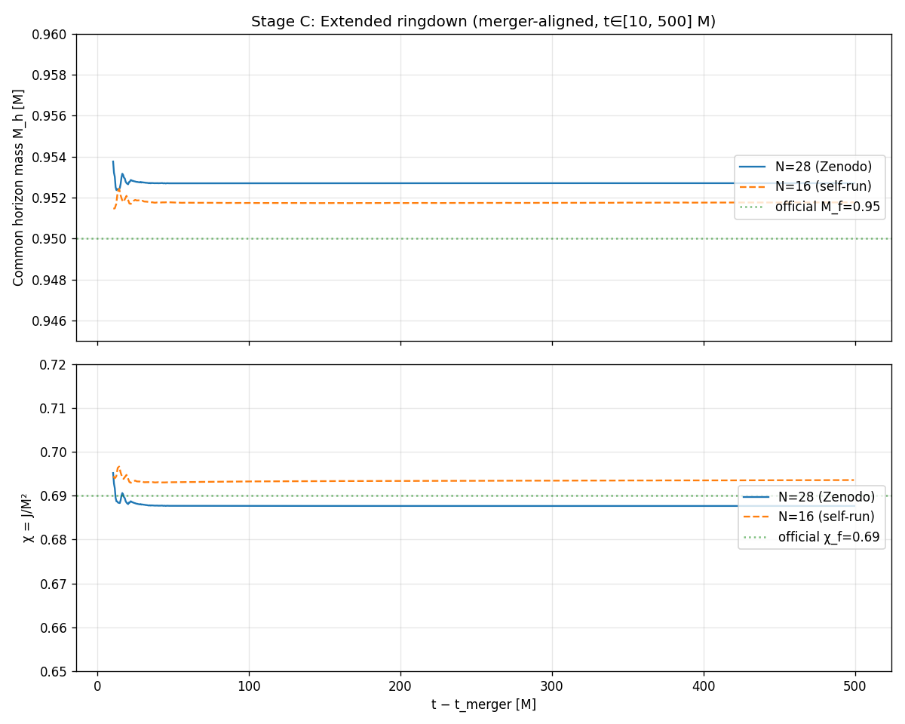

### 連星ブラックホール合体(GW150914)を自宅PCでシミュレーションしてみた <img src="assets/images/title.png" height="320px"> --- ### 自己紹介 <div class="profile-container"> <div class="profile-left"> * さめ (мег-сск) * ⚛️ VRChat 物理学集会の主催 * 🧑🎓 社会人学生として通信制大学在学中 * 得意分野: * 📸 コンピュータビジョン (画像認識/点群処理) * 🌍 空間情報処理 (地理情報/リモートセンシング) * ☁️ クラウドインフラ設計/IaC (AWS, GCP) * 学生時代は地球物理学を専攻 * 地球観測技術のエンジニアとして活動中 </div> <div class="profile-right"> <img src="assets/images/icon_circle.png" alt="avatar" height="350px" width="350px"> </div> </div> --- ### 今日話すこと <div class="simple-box"> * 2015 年に LIGO が検出した**最初の重力波 GW150914** を、 数値相対論コード **Einstein Toolkit** で**自宅 PC** から再現してみた話 * やったこと: * 公式ギャラリーの解像度を個人所有の PC で実行できるよう**解像度を落として**完走 * 軌道・波形を **リファレンスデータ**と比較 </div> <br> <div class="highlight-box"> * 学術的に新規性のある研究ではない * **「動かしてみた」系の自由研究** という位置付け * **筆者は数値相対論をよく知らないど素人** </div> --- ## はじめに ### なぜやったのか？ --- ### 動機 — なぜやろうと思ったのか <div class="simple-box"> * 連休中に旅行に行く予定があった * PC を遊ばせておくのはもったいないのでせっかくなら**重い計算**を投げて回したい * どうせやるなら**インパクトのある計算**にしたい * → **GW150914** (人類が初めて直接検出した重力波) を自分の手元で計算する * この時点ではただの思い付き </div> --- ### 実現可能性の検討 <div class="simple-box"> * 調べてみたら、案外**やれそうな材料が揃っていた** * 数値相対論の OSS フレームワーク **Einstein Toolkit** * 公式ギャラリーが**パラメータと結果を完全公開**している * Zenodo に**リファレンス用のシミュレーション結果**もある </div> <br> <div class="highlight-box"> ど真ん中のモチベーション: **歴史的な物理イベントを自分の手元で計算してみたい** </div> --- ### 重力波とは？ (ざっくり) <div class="simple-box"> * 質量を持つ物体が**加速度運動**することで生じる、**時空 (重力場) の波** * 荷電粒子が加速すると**電磁波**が出るのと同じアナロジー * 電荷 → 質量、 電磁場 → 重力場 * 1916 年にアインシュタインが一般相対論で予言 * 2015 年に LIGO が初めて直接観測に成功 **(GW150914)** * 理論での予言から実証まで**約 100 年**！ </div> --- ### GW150914 とは？ <div class="simple-box"> * **2015 年 9 月 14 日**、米 LIGO が検出した 人類**最初の重力波直接観測**イベント * 由来: **連星ブラックホール (BH) 合体** (Binary Black Hole merger) * 2 つの BH が 1 つに合体し、エネルギーを放出 * 質量 $ 36 M_{\odot} $ + $ 29 M_{\odot} $ → 最終 BH $ 62 M_{\odot} $ * **約 3 $M_{\odot}$ 分のエネルギーが重力波として宇宙に放出** * 数値相対論シミュレーションは観測波形の解析に極めて重要な役割を果たした </div> --- ### BBH 合体の 3 段階 <div class="simple-box"> <table> <thead> <tr> <th>段階</th> <th>何が起こるか</th> </tr> </thead> <tbody> <tr> <td><strong>インスパイラル</strong></td> <td>2 つの BH が<strong>らせん状に回りながら接近</strong></td> </tr> <tr> <td><strong>マージャー</strong></td> <td>2 つの BH が<strong>合体</strong>し共通 BH が形成、<strong>重力波を放出</strong></td> </tr> <tr> <td><strong>リングダウン</strong></td> <td>最終 BH が<strong>特定の周波数で振動しながら減衰</strong></td> </tr> </tbody> </table> </div> <br> <div class="highlight-box"> * この 3 段階を**定性的**に捉えられたかを検証 </div> --- ### なぜ数値相対論は難しいのか <div class="simple-box"> * 解くべきは **アインシュタイン方程式** * 10 個の連立非線形偏微分方程式 * **特異点を含む BH** をどう数値的に避けるか * **数値安定性**のための定式化が必要 * 2005 年に初めて BBH 合体の数値シミュレーションに成功 * それまではインスパイラルからマージャーまで通して解ける現象が極めて限られていた </div> --- ### 現実的なマシン制約 <div class="results-box"> <table> <thead> <tr> <th></th> <th>公式ギャラリー</th> <th><strong>本プロジェクト</strong></th> <th>比</th> </tr> </thead> <tbody> <tr> <td>空間刻み h₀</td> <td>1.224 M (細かい)</td> <td><strong>2.143 M</strong></td> <td><strong>1.75 倍粗い</strong></td> </tr> <tr> <td>並列度</td> <td>128 MPI プロセス</td> <td><strong>1 MPI × OMP=16 (16 コア)</strong></td> <td>約 1/8</td> </tr> <tr> <td>メモリ</td> <td>98 GB</td> <td><strong>28.76 GiB peak</strong></td> <td>約 1/3</td> </tr> </tbody> </table> </div> <small>※ 公式ギャラリーは内部解像度パラメータ N=28、本プロジェクトは N=16 (BH 周辺のグリッド点数)。</small> --- ### 解像度を落とす判断 <div class="simple-box"> * 自宅環境: **16 コア / 93 GiB RAM** * 公式の N=28 設定では **メモリは何とかなる**ものの、**リングダウン到達まで 16 日以上**かかる見込み → 連休中に終わる計算、という制約と要件を満たさない * **解像度を N=16 に落として** 1.75 倍粗いグリッドで回す方針へ * 軌道数・波形の **定性的再現** を狙う * 検証は **Zenodo の N=28 reference データとの比較**で代替 </div> --- ### 本自由研究の位置付け <div class="simple-box"> **学術的な新規性・意義は無い** * 公式ギャラリー・LIGO 論文・後続の数値相対論論文で **やり尽くされている** * 解像度 N=16 では LIGO 観測の精度比較に 使えるレベルには**精度不足** * プロはさらに先 — 例えば連星中性子星合体での重元素生成やニュートリノ放出など — を研究対象としている * マルチメッセンジャー天文学の発達 </div> --- ### 学術的意義だけが価値ではない <div class="simple-box"> * **個人の好奇心**そのものがメインの動機 * Dockerで**仮想環境の再現を容易**にしてしまえば、 **個人 PC でも追試できる** * 「**歴史的イベントを自分の手元で計算した**」という体験が、**筆者自身を含むアマチュアの科学愛好家に喜びを提供できる**のでは？ </div> <br> <div class="highlight-box"> * **「アマチュアが個人 PC でもここまでやれる」を見せる** </div> --- ### AIエージェントの活用 <div class="simple-box"> * シミュレーションの実行に Claude Opus 4.7 を活用 * AI エージェント活用の Pros & Cons は5月21日の個人開発集会で発表予定 </div> --- ## 実行結果 ### 解像度を落としたら何が起きたか --- ### 困った: 起動直後にクラッシュ <div class="simple-box"> * 公式パラメータをそのまま N=16 で動かすと、シミュレーション **開始直後に座標系のエラーで abort**してしまう </div> <div class="code-block"> ```text ABORT: Interpolate2/test.cc:77 refinement level > 0 grid contains inter-patch boundary points ``` </div> --- ### 何が起きていたのか? (ざっくり) <div class="simple-box"> GW150914 の計算では**ハイブリッドな座標系**を使う: * **内側**: BH 周辺の時空が激しく変化する領域 * **外側**: 重力波が伝播する領域 さらに格子の細かさを場所によって変える **AMR (適応格子細分化)** を併用。 → 細かい格子と粗い格子のあいだに**「バッファ領域」** が必要。 計算を滑らかにつなぐための補間バッファ。 </div> --- ### バッファは解像度に反比例する <div class="results-box"> <table> <thead> <tr> <th></th> <th>空間刻み h₀</th> <th>バッファ厚 (物理単位)</th> <th>結果</th> </tr> </thead> <tbody> <tr> <td>N=28 (公式)</td> <td>1.224 M</td> <td>~6 M</td> <td>OK</td> </tr> <tr> <td><strong>N=16 (本研究)</strong></td> <td><strong>2.143 M</strong></td> <td><strong>~10.7 M (1.75 倍)</strong></td> <td>❌ crash</td> </tr> </tbody> </table> </div> <br> <div class="highlight-box"> 粗い解像度では**バッファが内側パッチと外側パッチの継ぎ目に侵入**し、 境界補間処理が破綻する。 </div> --- ### 解決策: 「内側」を拡大する <div class="simple-box"> * バッファが届かないように、**内側パッチを物理的に拡大**する * **51.40 M → 77.10 M** (約 1.5 倍) * AMR 階層を維持したまま **N=16 で安定動作**に成功 </div> <br> <div class="highlight-box"> * 教訓: パラメータは**特定の解像度に最適化**されている。 解像度を変える際は単に格子数を変えるだけでは済まない * 公式が「推奨値」を明記している意味を**身をもって理解**した </div> --- ### 1700 M ぶっ通しは怖い <div class="simple-box"> * 物理時間 **1700 M** (合体 + リングダウン完成まで) を一気に走らせると合計 80 時間以上 * 途中で異常があっても気付かず最後まで走らせると、**失敗箇所の特定が困難**で計算リソースの浪費が大きい </div> --- ### 3 段階に分割して検証 <div class="results-box"> <table> <thead> <tr> <th>Stage</th> <th>物理時間範囲</th> <th>検証する物理</th> </tr> </thead> <tbody> <tr><td><strong>A</strong></td><td>0 → 100 M</td><td>初期データ・inspiral 早期</td></tr> <tr><td><strong>B</strong></td><td>100 → 1000 M</td><td>inspiral 全体・マージャー到達</td></tr> <tr><td><strong>C</strong></td><td>1000 → 1700 M</td><td>リングダウン完成</td></tr> </tbody> </table> </div> <br> <div class="highlight-box"> * 各段階で reference との比較 * 各段階で問題がなければ次の段階へ </div> --- ## リファレンスデータとの比較 ### 自前 N=16 vs Zenodo N=28 --- ### 比較戦略 <div class="simple-box"> * 公式 N=28 で実際に走らせた**生データが Zenodo に公開**されている * [10.5281/zenodo.155394](https://doi.org/10.5281/zenodo.155394) * 自前 N=16 run vs Zenodo N=28 で比較: * **軌道**: BH の xy 平面軌道、軌道分離 D(t) の重ね描き * **重力波**: ψ4 振幅の時系列、ピーク値の数値比較 * **最終 BH**: マージャー時刻、質量損失 </div> --- ### 連星 BH の軌道 (xy 平面) <p></p> <p class="caption">N=16 (本研究) と N=28 reference でほぼ重なる螺旋軌道。中心に向かって巻き込み、最後に合体</p> <p class="caption">初期位置が違うのは出力結果の管理ミスです...</p> --- ### 軌道分離 D(t) — マージャーが遅れる <p></p> <p class="caption">N=16 ではマージャーまでの時間が <strong>+2.94% (≈ 26 M)</strong> 遅れる。</p> --- ### 軌道分離 D(t) — マージャー時刻で揃えるとほぼ重なる <p></p> <p class="caption">マージャー時刻で時間軸を整列。インスパイラル全域で N=16 / N=28 がほぼ重なる — <strong>遅れているだけで軌道の形そのものは正しく追えている</strong></p> --- ### 重力波 ψ4 実部 — 位相は少しずれるが形は再現 <p></p> <p class="caption">ψ4 の実部 (波そのもの)。マージャー直前で振幅が急激に増大。N=16 は <strong>位相が遅れ</strong>、合体直後の高周波部では振幅もやや劣化 — <strong>精度の劣化は確かに見える</strong>。それでも振動回数・包絡線の形は<strong>定性的に再現</strong>できている</p> --- ### 重力波 ψ4 振幅 — マージャー時刻で揃えるとピーク値が一致 <p></p> <p class="caption">|ψ4| = √(Re² + Im²) のエンベロープ。マージャー時刻で時間軸を整列すると、N=16 / N=28 で<strong>ピーク振幅・時刻ともに高精度一致</strong> (振幅 −1.79%)</p> --- ### リングダウン波形 (拡大) <p></p> <p class="caption">合体後の最終 BH が<strong>特定周波数で振動しながら減衰</strong></p> --- ### 質量損失の計算 <div class="simple-box"> $$ \Delta M = M - 0.9518M = 0.0482 M \simeq 3.13 M_{\odot} $$ $M$: 初期状態での2つのBHの総質量 </div> <br> <div class="highlight-box"> * リファレンスの質量損失は約 $3.07 M_{\odot}$ * **「太陽質量の約3倍のエネルギーが重力波として宇宙に放出された」という有名な事実を数値シミュレーションで再現できた！** </div> --- ### とくに驚いた結果 <div class="simple-box"> * インスパイラル期の軌道は極めて高い精度で再現できた * マージャー時刻が26M遅れるだけ * 重力波のピーク振幅は 1.79% しかずれない * 観測結果との定量的な検証には**明確に不足**だが、現象の定性的理解には十分 * そもそも観測結果との定量的な検証は目的としていない * 質量損失は $3.13 M_{\odot}$ で、LIGOの公式見解 $3.0 \pm 0.5 M_{\odot}$ の範囲内 </div> --- ## 完走した感想 --- ### 完走した感想 <div class="highlight-box"> * 有名なイベントを自分のPCで走らせられたのは単純に嬉しい * 精度も想定以上にリファレンスと一致した * Opus 4.7 が賢くて助けられた、4.6ではもっと時間がかかったはず * 一方で怖さも感じている * 数値相対論について何も知らないのに計算結果だけは出せてしまう... * 5/21の個人開発集会ではAI活用についての懸念と所感について話します </div> --- ### 柴田大先生の言葉から学び考える <div class="simple-box"> * 柴田 大, [日本の数値相対論](https://www2.yukawa.kyoto-u.ac.jp/ws/2010/tap2010/pdf/22_10_shibata.pdf) (2010)より引用 * 「だれでも出来る数値相対論の時代」 * 「相対論を知らなくてもコードが作れる！」 * 「公開も促進される：どこかで拾ってもよい！」 * 「一方、つまらない/あやしい仕事も多数登場？困った輩も出るだろう(間違った結果を平然と出す輩が増える？) 」 </div> <br> <div class="highlight-box"> * 2026年は素人ができる時代になってしまった * 『動かせる』と『正しく解釈できる』を分けて考える </div> --- ### 数値計算と物理 <div class="simple-box"> * 「数値計算はやった後に、物理(本質)を引き出す仕事が重要である。」 * 「３行で説明できないような計算結果は安易に信じては行けない。」 * 「計算結果を得た場合、３行で説明できるように熟考し、物理的説明を加えて論文にせよ。」 </div> <br> <div class="highlight-box"> * **柴田先生の言葉はますます重要性を増しているのでは？** </div> --- ### まとめ <div class="simple-box"> 1. 公式パラメータをそのまま N=16 で動かすと **crash** → 内側パッチを物理的に**拡大**して解決 2. 1700 M を完走 (インスパイラル → マージャー → リングダウン) 3. 自前 N=16 vs リファレンス N=28 で想定以上の高精度一致 4. 計算時間は **約 3.5 日**で完走 (連休内に間に合った) </div> <br> <div class="highlight-box"> * **「アマチュアが個人 PC でもここまでやれる」を実証できた** * 一方でプロの研究者のスゴ味を味わった </div> --- ### LT登壇者の募集 <div class="simple-box"> * 物理学集会ではLT登壇者を募集しています！ * どんなジャンルでもOK！ * 興味のある方は物理学集会のDiscordサーバーまで！ </div> <img src="assets/images/qrcode.png" width="200px"> --- ### アンケート回答のお願い <div class="simple-box"> * 集会の運営改善 * VR空間における学習コミュニティ／サイエンスコミュニケーションの実践としての成果整理 のためにアンケートを取っています。 もしよければぜひご回答ください！ </div> --- ## Appendix ### 詳細データ --- ### Appendix A: check pass <div class="results-box" style="font-size: 0.75em;"> <table> <thead> <tr> <th>Check</th> <th>N=16</th> <th>N=28</th> <th>差分</th> <th>閾値</th> <th>Pass</th> </tr> </thead> <tbody> <tr><td>マージャー時刻</td><td>925.1 M</td><td>898.7 M</td><td>+2.94%</td><td>±5%</td><td>✓</td></tr> <tr><td>最終 BH 質量 M_f</td><td>0.9518</td><td>0.9527</td><td>−0.10%</td><td>±2%</td><td>✓</td></tr> <tr><td>最終 BH スピン χ_f</td><td>0.6930</td><td>0.6877</td><td>+0.0054 abs</td><td>±0.02</td><td>✓</td></tr> <tr><td>軌道数</td><td>5.08</td><td>4.92</td><td>+0.15</td><td>±0.5</td><td>✓</td></tr> <tr><td>ψ4 ピーク振幅</td><td>7.21e-4</td><td>7.34e-4</td><td>−1.79%</td><td>±10%</td><td>✓</td></tr> <tr><td>ψ4 ピーク時刻</td><td>113.7 M</td><td>114.0 M</td><td>−0.28 M</td><td>±20 M</td><td>✓</td></tr> </tbody> </table> </div> --- ### Appendix B: 計算リソース実測 <div class="results-box"> <table> <thead> <tr> <th>段階</th> <th>wall time</th> <th>peak メモリ</th> </tr> </thead> <tbody> <tr><td>Stage A (0 → 100 M)</td><td>6h51m</td><td>26.91 GiB</td></tr> <tr><td>Stage B (100 → 1000 M)</td><td>49h39m</td><td>28.76 GiB</td></tr> <tr><td>Stage C (1000 → 1700 M)</td><td>27h54m</td><td>22.79 GiB</td></tr> <tr><td><strong>合計</strong></td><td><strong>84h24m (約 3.5 日)</strong></td><td>—</td></tr> </tbody> </table> </div> <br> <div class="simple-box"> * 連休内 (≈10 日) に**余裕で完走** * Stage C のメモリが小さいのは、merger 後に高解像度層が **common horizon 周辺のみで済んだ**ため (AMR 構造が単純化) </div>